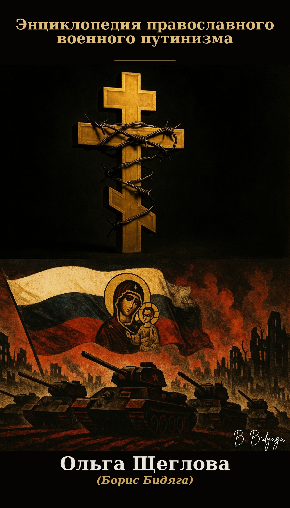

Литературно-художественный проект в помощь Украине
Художественное исследование путинского режима через призму сатиры, документального триллера и политического анализа. Проект обнажает мифологию и механизмы тоталитаризма, превращая абсурд официальной риторики в инструмент десакрализации власти.
ОГЛАВЛЕНИЕ:
Палата №666. Большой Альбом сатирических миниатюр
Методичка ФСБ: сатирические протоколы политического преследования
Анатомия путинских „традиционных ценностей“. Статья
Об авторе и условиях создания проекта
Благотворительные фонды помощи Украине
ISBN: 978-5-9903439-3-1
Charity Art Project in Support of Ukraine
An artistic study of the Putin regime through the prism of satire, documentary thriller, and political analysis. The project exposes the mythology and mechanisms of totalitarianism, turning the absurdity of official rhetoric into a tool for the desacralization of power.
CONTENTS:
Ward №666. Grand Album of satirical miniatures
In the Hall of a Thousand Truths
FSB Playbook: Satirical Protocols of Political Persecution
Rising off Her Knees. One-Act Play
The Anatomy of Putin's "Traditional Values". Article
About the Author and the Conditions of the Project's Creation
Charitable Foundations Assisting Ukraine
ISBN: 978-5-9903439-4-8
Projet Artistique Caritatif en Soutien à l’Ukraine
Une étude artistique du régime poutinien à travers le prisme de la satire, du thriller documentaire et de l'analyse politique. Le projet met à nu la mythologie et les mécanismes du totalitarisme, transformant l'absurdité de la rhétorique officielle en un outil de désacralisation du pouvoir.
SOMMAIRE :
Chambre n°666. Le Grand album de miniatures satiriques
Dans la Salle des Mille Vérités
Guide pratique du FSB : protocoles satiriques de la persécution politique
Se relevant de ses genoux. Mini-pièce
Anatomie des « valeurs traditionnelles » poutiniennes. Article
À propos de l'auteure et des conditions de création du projet
Fondations caritatives en soutien à l’Ukraine
ISBN: 978-5-9903439-5-5
Літературно-художній проект на допомогу Україні
Художнє дослідження путінського режиму крізь призму сатири, документального трилеру та політичного аналізу. Проект оголює міфологію та механізми тоталітаризму, перетворюючи абсурд офіційної риторики на інструмент розсакралізації влади.
ЗМІСТ:
Палата №666. Великий альбом сатиричних мініатюр
Методичка ФСБ: сатиричнi протоколи полiтичного переслiдування
Анатомія путінських „традиційних цінностей“. Стаття
Про автора та умови створення проєкту
Перелік благодійних фондів на допомогу Україні
ISBN: 978-5-9903439-6-2